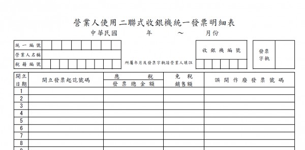

哈羅您好
請問 發票明細表 是在那邊匯出呢?
因為上次修改的 功能 將發票明細 改為餐飲費
但若用銷售明細匯出的話 雖然有發票，但內容卻是 點餐的項目
這樣會跟 發票內容不一致
正常的 發票明細表應該是
統編 品項 金額
AB12345678 餐飲費 1600
AB12345679 餐飲費 800
大約是這樣
也是因為有 新增發票項目 餐飲費 這個功能的關係
才會另外衍生這個問題
您在 想想這個部份 有沒有好一點的方法 最好是
能直接 匯出 表格可能會是比較方便的做法
例如 類似此表格
